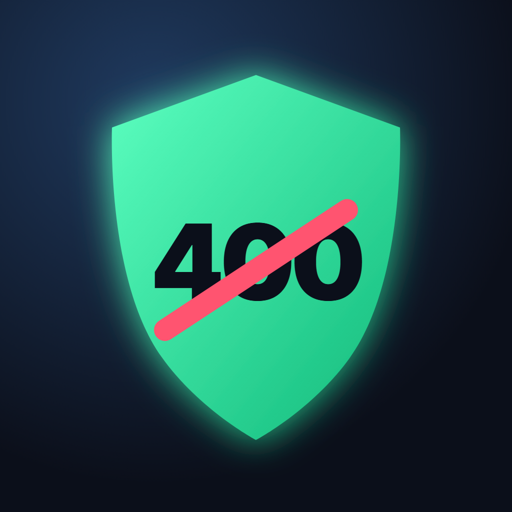

Bloquea las llamadas comerciales que empiezan por 400. Un botón, sin anuncios, sin suscripción y sin recoger datos.
Android: abre la app y concede el permiso de filtrado de llamadas y el de funcionar sin restricciones de batería.
iPhone: activa Bloqueo 400 en Ajustes › Teléfono › Bloqueo e identificación de llamadas.
¿Dudas o problemas? Escríbenos a info@zaorit.com.